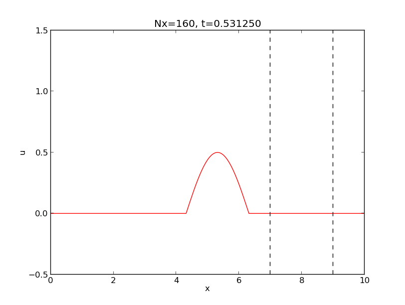

Section 1
Subsection 1
Subsection 2: Testing figures
The \( \theta \) parameter (not \( \nabla \)?)
Custom Environments
Tables
A test of verbatim words in heading with subscript \( a_i \): my_file_v1 and my_file_v2
Just bold
Just emphasize
Just verbatim
Bold beginning
Emphasize beginning
Verbatim beginning
Maybe bold end
Maybe emphasize end
Maybe verbatim end
The middle has bold word
The middle has emphasize word
The middle has verbatim word
Bibliography test
Example 1: Examples can be typeset as exercises
User-defined environments
Example 1: A test function
Example 2: Addition
URLs
LaTeX Mathematics
Exercises
Problem 2: Flip a Coin
Not an exercise
Exercise 3: Test of plain text exercise
Project 4: Compute a Probability
Project 5: Explore Distributions of Random Circles
Exercise 6: Determine some Distance
Some exercise without the "Exercise:" prefix
Exercise 8: Solution of differential equation
Example 9: Just an example
Here goes another section
More Exercises
Exercise 10: Make references to projects and problems
Project 11: References in a headings do not work well in html
References
Appendix: Just for testing; part I
A subsection within an appendix
Appendix: Just for testing; part II
Appendix: Testing identical titles
Appendix: Testing identical titles
Appendix: Testing identical titles
Appendix: Testing identical titles
Appendix: Testing inline comments
Appendix: Testing headings ending with verbatim inline
The format of this document is plain, homemade HTML (from DocOnce).
Abstract. This is a document with many test constructions for doconce syntax. It was used heavily for the development and kept for testing numerous constructions, also special and less common cases.
And exactly for test purposes we have an extra line here, which is part of the abstract.
Here is a nested list:
Here are two lines that make up a block quote for testing emphasized words and boldface words, also with hypens: pre-fix, post-fix, pre-fix, post-fix.
Here are two references. Equation \eqref{my:eq1} is fine. Eq. \eqref{my:eq1} too. Even Equation \eqref{my:eq1} without the tilde. This equation appears in another part if this document is split.
Let us add a paragraph to
test that HTML,
with WordPress
(--wordpress option)
can handle linebreaks
correctly,
even when lines begin with
bold words and
verbatim words in
red color, and
links as well as math:
\( 1+1=2 \).
Test also that emphasize
at the end of line, and bold
works, as well as color
and links2
and verbatim
as well.
More text, with a reference back to the section Section 1 and Subsection 1, and further to the the sections Subsection 1 and URLs, which encourages you to do the tasks in Problem 2: Flip a Coin and Exercise 10: Make references to projects and problems. Appendix: Just for testing; part I and Appendix: Just for testing; part II are also nice elements.
The section Subsection 1 is fine. The section URLs too.
Let's do some copying from files too. First from subroutine up to the very end,
1 2 3 4 5 6 7 8 9 10 11 12 13 | subroutine test()
integer i
real*8 r
r = 0
do i = 1, i
r = r + i
end do
return
C END1
program testme
call test()
return
|
and then just the subroutine,
1 2 3 4 5 6 7 8 | subroutine test()
integer i
real*8 r
r = 0
do i = 1, i
r = r + i
end do
return
|
and finally the complete file with a plain text verbatim environment
(envir=ccq):
C a comment subroutine test() integer i real*8 r r = 0 do i = 1, i r = r + i end do return C END1 program testme call test() return
Testing other code environments. First Python:
1 2 3 4 | !bc pycod
def f(x):
return x+1
!ec
|
which gets rendered as
1 2 | def f(x):
return x+1
|
Test paragraph and subsubsection headings before before code.
Paragraph heading before code.
1 2 | import sys
sys.path.insert(0, os.pardir)
|
1 2 | def h(z):
return z+1
|
Now a complete program to be shown via Python Online Tutorial:
Some more Python code (actually specified as a sage cell, but such cells are not supported by this format).
Then Cython:
1 2 | cpdef f(double x):
return x + 1
|
Standard Python shell sessions:
1 2 3 4 5 6 7 8 | >>> from numpy import linspace, sin
>>> # Some comment
>>> x = linspace(0, 2, 11)
>>> y = sin(x)
>>> y[0]
0
>>> import matplotlib.pyplot as plt
>>> plt.plot(x, y)
|
Similar IPython sessions:
1 2 3 4 5 6 7 8 9 10 11 12 13 14 15 | In [1]: from numpy import linspace, sin
In [2]: # Some comment
In [3]: x = linspace(0, 2, 11)
In [4]: y = sin(x)
In [5]: y[0]
Out[5]: 0
In [6]: import matplotlib.pyplot as plt
In [7]: plt.plot(x, y)
In [8]: a='multiple-\nline\noutput'
In [9]: a
Out[9]: 'multiple-\nline\noutput'
In [10]: print a
multiple-
line
output
|
Here is the interactive session again, but with pyshell-t.
1 2 3 4 5 6 7 8 | >>> from numpy import linspace, sin
>>> # Some comment
>>> x = linspace(0, 2, 11)
>>> y = sin(x)
>>> y[0]
0
>>> import matplotlib.pyplot as plt
>>> plt.plot(x, y)
|
C++:
1 2 3 4 5 6 7 | #include <iostream>
int main()
{
std::cout << "Sample output" << std::endl;
return 0
}
|
And a little bit of Fortran:
1 2 3 4 5 6 7 8 | !bc cod
subroutine midpt(x, length, a, b)
real*8 a, b, x
x = (a + b)/2
length = b - a
return
end
!ec
|
which then is typeset as
1 2 3 4 5 6 | subroutine midpt(x, length, a, b)
real*8 a, b, x
x = (a + b)/2
length = b - a
return
end
|
HTML:
1 2 3 4 5 | <table>
<tr><td>Column 1</td><td>Column 2</td></tr>
<tr><td>0.67526 </td><td>0.92871 </td></tr>
<!-- comment -->
</table>
|
But inline HTML code is also important, like text that starts with
<a href=" (which can destroy the following text if not properly
quoted).
And here is a system call:
1 2 3 4 5 | Terminal> mkdir test
Terminal> cd test
Terminal> myprog -f
output1
output2
|
Any valid pygments lexer/language name can appear to, e.g.,
1 2 3 4 5 6 7 | !bc restructuredtext
=======
Heading
=======
Some text.
!ec
|
results in
1 2 3 4 5 | =======
Heading
=======
Some text.
|
Finally, !bc do supports highlighting of DocOnce source:
1 2 3 4 5 6 7 8 9 10 11 12 13 14 15 16 17 18 19 20 21 22 23 24 25 26 27 28 29 30 31 32 33 34 35 | ======= DocOnce test file =======
===== Computer code =====
Inline verbatim code, as in `import numpy as np`, is allowed, as well as
code blocks:
!bc pycod
from math import sin
def f(x):
"""Example on a function."""
return sin(x) + 1
print f(0)
!ec
===== Mathematics =====
Formulas can be inline, as in $\nabla\cdot\boldsymbol{u} = 0$, or typeset
as equations:
!bt
\begin{align*}
\nabla\cdot\boldsymbol{u} &= 0,\\
\boldsymbol{u} &= \nabla\phi .
\end{align*}
!et
=== Subsubsection heading ===
DocOnce files can have chapters, sections, subsections, and subsubsections.
__Paragraph heading.__ Paragraphs may have headings.
|
It is time to test verbatim inline font especially with a newline
inside the text and an exclamation mark at the end: BEGIN! For
spellcheck, test a verbatim expression in another in a third.
Also test exclamation mark as in !bc and !ec as well as a != b.
Also test backslashes and braces like \begin, \begin{enumerate},
\end{this}\end{that}, and {something \inside braces}.
Here is some red color and an attempt to write with
green color containing a linebreak
code. Some formats will only display
this correctly when html
is the output format.
But here some more running text is added which is not part of
the previous blocks with line breaks.
1 2 3 4 5 | Terminal> python -c 'print "Testing\noutput\nfrom\nPython."'
Testing
output
from
Python.
|
Here is a test of footnotes [1], which are handy in text. They are used in different flavors, now in
h[i] += 1 [3]
(must have space between inline code and footnote!)1: Typesetting of the footnote depends on the format. Plain text does nothing, LaTeX removes the definition and inserts the footnote as part of the LaTeX text. reStructuredText and Sphinx employ a similar type of typesetting as Extended Markdown and DocOnce, and in HTML we keep the same syntax, just displayed properly in HTML.
2: Math footnotes can be dangerous since it interferes with an exponent.
3: One-line footnote.
4: google.com is perhaps the most famous web site today.
Here is some more text before a new definition of a footnote that was used above.
This paragraph aims to test non-breaking space character, and a typical
example where this is needed is in physical units: 7.4 km is traveled
in \( 7.4/5.5\approx 1.345 \) s. Also check that a link is
not broken across lines (drag the browser window to test this).
(On the other hand, the tilde is used in
computer code, e.g., as in [~x for x in y] or in y=~x, and should
of course remain a tilde in those contexts.)
Test of figures. In particular we refer to Figure 1 in which there is a flow.
Figure 1: Visualization of a wave.

Figures without captions are allowed and will be inlined.
Here is figure 2 with a long (illegal) multi-line caption containing inline verbatim text:
|
Figure 2: A long caption spanning several lines and containing verbatim words like |
Test URL as figure name:

Test SVG figure:

HTML output may feature Bokeh plots:
Remark.
Movies are tested in separate file movies.do.txt.
Functions do not always need to be advanced, here is one involving \( \theta \):
1 2 | def f(theta):
return theta**2
|
More on \( \theta \). Here is more text following headline with math.
Newcommands must also be tested in this test report: \( \frac{1}{2} \), \( {1/2} \), \( \pmb{x} \), \( \frac{Du}{dt} \), both inline and in block: $$ \begin{align} \frac{Du}{dt} &= 0\nonumber\\ \frac{1}{2} &= {1/2} \label{_auto1}\\ \frac{1}{2}\pmb{x} &= \pmb{n} \label{_auto2} \end{align} $$
Or with align with label and numbers: $$ \begin{align} \frac{Du}{dt} &= 0 \label{aligneq1}\\ \frac{1}{2} &= {1/2} \label{_auto3}\\ \frac{1}{2}\pmb{x} &= \pmb{n} \label{aligneq2} \end{align} $$
Here is an attempt to create a theorem environment via Mako
(for counting theorems) and comment lines to help replacing lines in
the .tex by proper begin-end LaTeX environments for theorems.
Should look nice in most formats!
Theorem 5. Let \( a=1 \) and \( b=2 \). Then \( c=3 \).
Proof. Since \( c=a+b \), the result follows from straightforward addition. \( \Diamond \)
As we see, the proof of Theorem 5 is a modest achievement.
Let us take this table from the manual:
| time | velocity | acceleration |
|---|---|---|
| 0.0 | 1.4186 | -5.01 |
| 2.0 | 1.376512 | 11.919 |
| 4.0 | 1.1E+1 | 14.717624 |
The DocOnce source code reads
Here is yet another table to test that we can handle more than one table:
| time | velocity | acceleration |
|---|---|---|
| 0.0 | 1.4186 | -5.01 |
| 1.0 | 1.376512 | 11.919 |
| 3.0 | 1.1E+1 | 14.717624 |
And one with math headings (that are expanded and must be treated accordingly), verbatim heading and entry, and no space around the pipe symbol:
| \( i \) | \( h_i \) | \( \bar T_i \) | L_i |
| 0 | 0 | 288 | -0.0065 |
| 1 | 11,000 | 216 | 0.0 |
| 2 | 20,000 | 216 | 0.001 |
| 3 | 32,000 | 228 | 0.0028 |
| 4 | 47,000 | 270 | 0.0 |
| 5 | 51,000 | 270 | -0.0028 |
| 6 | 71,000 | 214 | NaN |
And add one with verbatim headings (with underscores),
and rows starting with |- because of a negative number,
and | right before and after verbatim word (with no space):
| exact | v_1 | \( a_i \) + v_2 | verb_3_ |
|---|---|---|---|
| 9 | 9.62 | 5.57 | 8.98 |
| -20 | -23.39 | -7.65 | -19.93 |
| 10 | 17.74 | -4.50 | 9.96 |
| 0 | -9.19 | 4.13 | -0.26 |
Pipe symbols in verbatim and math text in tables used to pose difficulties, but not anymore:
| \( S \) | command |
|---|---|
| $ ||a_0|| $ | norm|length |
| \( x\cap y \) | x|y |
Here is a table with X alignment:
| Type | Description |
|---|---|
| X | Alignment character that is used for specifying a potentially very long text in a column in a table. It makes use of the tabularx package in LaTeX, otherwise (for other formats) it means l (centered alignment). |
| l,r,c | standard alignment characters |
Finally, a table with math
(bm that expands to boldsymbol, was tricky, but
cleanly handled now)
and URLs.
| \( \mathcal{L}=0 \) |  |  |
| \( a=b \) |  |  |
| \( \nabla\cdot\boldsymbol{u} =0 \) |  |  |
my_file_v1 and my_file_v2
Paragraph with verbatim and math: my_file_v1.py and my_file_v2.py define some math \( a_{i-1} \).
Here is more __verbatim__ code and
some plain text on a new line.
Some text.
Some text.
Just verbatim Some text.
Some text.
Some text.
Verbatim beginning Some text.
Some text.
Some text.
verbatim end Some text.
Some text.
Some text.
verbatim word Some text.
Just emphasize. Some text.
Just verbatim.
Some text.
Emphasize beginning. Some text.
Verbatim beginning.
Some text.
Maybe emphasize end. Some text.
Maybe verbatim end.
Some text.
The middle has emphasize word. Some text.
The middle has verbatim word.
Some text.
Ampersand.
We can test Hennes & Mauritz, often abbreviated H&M, but written
as Hennes & Mauritz and H & M.
A sole & must also work.
1 2 | # Just to check that ampersand works in code blocks:
c = a & b
|
Quotes.
Let us also add a test of quotes such as "double quotes, with numbers
like 3.14 and newline/comma and hyphen (as in double-quote)"; written
in the standard LaTeX-style that gives correct LaTeX formatting and
ordinary double quotes for all non-LaTeX formats. Here is another
sentence that "caused" a bug in the past because double backtick
quotes could imply verbatim text up to a verbatim word starting with
period, like .txt.
More quotes to be tested for spellcheck: ("with parenthesis"), "with newline" and "with comma", "hyphen"-wise, and "period".
Here is an example: [1] discussed propagation of large destructive water waves, [2] gave an overview of numerical methods for solving the Navier-Stokes equations, while the use of Backward Kolmogorov equations for analyzing random vibrations was investigated in [3]. The book chapter [4] contains information on C++ software tools for programming multigrid methods. A real retro reference is [5] about a big FORTRAN package. Multiple references are also possible, e.g., see [1] [4].
We need to cite more than 10 papers to reproduce an old formatting problem with blanks in the keys in reST format: [6] [3] [7] [1] and [2] [8] [9] [10] [11] [12] [13] and all the work of [14] [4] [15] as well as old work [5] and [16], and the talk [17]. Langtangen also had two thesis [18] [16] back in the days. More retro citations are the old ME-IN323 book [19] and the [20] OONSKI '94 paper.
Examples can start with a subsection heading starting with Example:
and then, with the command-line option --examples_as_exercises be
typeset as exercises. This is useful if one has solution
environments as part of the example.
a) State some problem.
Solution. The answer to this subproblem can be written here.
b) State some other problem.
Hint 1. A hint can be given.
Hint 2. Maybe even another hint?
Solution. The answer to this other subproblem goes here, maybe over multiple doconce input lines.
The example in the section Example 1: A test function demonstrates how to write a test function.
That is, a special test function for a function add appears in
the example in the section Example 1: A test function.
Suppose we want to write a test function for checking the implementation of a Python function for addition.
1 2 3 4 5 6 7 8 | def add(a, b):
return a + b
def test_add():
a = 1; b = 1
expected = a + b
computed = add(a, b)
assert expected == computed
|
We have $$ 1 + 1 = 2 $$
Testing of URLs: hpl's home page hpl, or
the entire URL if desired, http://folk.uio.no/hpl. Here is a
plain file link testdoc.do.txt, or testdoc.do.txt, or
testdoc.do.txt or testdoc.do.txt or a link with
newline. Can test spaces with the link with word
too: hpl or hpl. Also file:/// works: link to a
file is
fine to have. Moreover, "loose" URLs work, i.e., no quotes, just
the plain URL as in http://folk.uio.no/hpl, if followed by space, comma,
colon, semi-colon, question mark, exclamation mark, but not a period
(which gets confused with the periods inside the URL).
Mail addresses can also be used: hpl@simula.no, or just a mail link, or a raw mailto:hpl@simula.no.
Here are some tough tests of URLs, especially for the latex format:
Newton-Cotes formulas
and a good book. Need to test
Newton-Cotes with percentage in URL too:
http://en.wikipedia.org/wiki/Newton%E2%80%93Cotes_formulas
and http://en.wikipedia.org/wiki/Newton-Cotes#Open_Newton.E2.80.93Cotes_formulae which has a shebang.
For the --device=paper option it is important to test that URLs with
monospace font link text get a footnote
(unless the --latex_no_program_footnotelink
is used), as in this reference to
decay_mod, ball1.py,
and ball2.py.
More tough tests: repeated URLs whose footnotes when using the
--device=paper option must be correct. We have
google, google, and
google, which should result in exactly three
footnotes.
Here is an equation without label using backslash-bracket environment: $$ a = b + c $$ or with number and label, as in \eqref{my:eq1}, using the equation environment: $$ \begin{equation} {\partial u\over\partial t} = \nabla^2 u \label{my:eq1} \end{equation} $$ We can refer to this equation by \eqref{my:eq1}.
Here is a system without equation numbers, using the align-asterisk environment: $$ \begin{align*} \pmb{a} &= \pmb{q}\times\pmb{n} \\ b &= \nabla^2 u + \nabla^4 v \end{align*} $$
And here is a system of equations with labels in an align environment:
$$
\begin{align}
a &= q + 4 + 5+ 6 \label{eq1} \\
b &= \nabla^2 u + \nabla^4 x \label{eq2}
\end{align}
$$
We can refer to \eqref{eq1}-\eqref{eq2}. They are a bit simpler than
the Navier-Stokes equations. And test LaTeX hyphen in CG-2.
Also test \( a_{i-j} \) as well as \( kx-wt \).
More mathematical typesetting is demonstrated in the coming exercises.
Below, we have Problem 2: Flip a Coin and Project 4: Compute a Probability, as well as Project 5: Explore Distributions of Random Circles and Project 11: References in a headings do not work well in html, and in between there we have Exercise 10: Make references to projects and problems.
a) Make a program that simulates flipping a coin \( N \) times. Print out "tail" or "head" for each flip and let the program count the number of heads.
Hint 1.
Use r = random.random() and define head as r <= 0.5.
Hint 2.
Draw an integer among \( \{1,2\} \) with
r = random.randint(1,2) and define head when r is 1.
Answer.
If the random.random() function returns a number \( < 1/2 \), let it be
head, otherwise tail. Repeat this \( N \) number of times.
Solution.
1 2 3 4 5 6 7 8 | import sys, random
N = int(sys.argv[1])
heads = 0
for i in range(N):
r = random.random()
if r <= 0.5:
heads += 1
print 'Flipping a coin %d times gave %d heads' % (N, heads)
|
b) Vectorize the code in a) using boolean indexing.
Vectorized code can be written in many ways. Sometimes the code is less intuitive, sometimes not. At least there is not much to find in the section Section 1.
c)
Vectorize the code in a) using numpy.sum.
Answer.
np.sum(np.where(r <= 0.5, 1, 0)) or np.sum(r <= 0.5).
In this latter subexercise, we have an example where the code is easy to read.
Remarks with such a subsubsection is treated as more text after the last subexercise. Test a list too:
flip_coin.py, flip_coin.pdf.
These are the exercise remarks, appearing at the very end.
Should be possible to stick a normal section in the middle of many exercises.
Very short exercise. What is the capital
of Norway?
Filename: myexer1.
What is the probability of getting a number between 0.5 and 0.6 when drawing uniformly distributed random numbers from the interval \( [0,1) \)?
At the end we have a list because that caused problems in LaTeX in previous DocOnce versions:
Hint.
To answer this question empirically, let a program
draw \( N \) such random numbers using Python's standard random module,
count how many of them, \( M \), that fall in the interval \( (0.5,0.6) \), and
compute the probability as \( M/N \).
The formula for a circle is given by
$$
\begin{align}
x &= x_0 + R\cos 2\pi t,
\label{circle:x}\\
y &= y_0 + R\sin 2\pi t,
\label{circle:y}
\end{align}
$$
where \( R \) is the radius of the circle, \( (x_0,y_0) \) is the
center point, and \( t \) is a parameter in the unit interval \( [0,1] \).
For any \( t \), \( (x,y) \) computed from \eqref{circle:x}-\eqref{circle:y}
is a point on the circle.
The formula can be used to generate n points on a circle:
1 2 3 4 5 6 7 8 9 | import numpy as np
def circle(R, x0, y0, n=501):
t = np.linspace(0, 1, n)
x = x0 + R*np.cos(2*np.pi*t)
y = y0 + R*np.sin(2*np.pi*t)
return x, y
x, y = circle(2.0, 0, 0)
|
The goal of this project is to draw \( N \) circles with random
center and radius. Plot each circle using the circle function
above.
a) Let \( R \) be normally distributed and \( (x_0,y_0) \) uniformly distributed.
Hint.
Use the numpy.random module to draw the
\( x_0 \), \( y_0 \), and \( R \) quantities.
Answer. Here goes the short answer to part a).
Solution. Here goes a full solution to part a).
b)
Let \( R \) be uniformly distributed and \( (x_0,y_0) \) normally distributed.
Filename: norm.
c) Let \( R \) and \( (x_0,y_0) \) be normally distributed.
Filename: circles.
At the very end of the exercise it may be appropriate to summarize and give some perspectives.
Intro to this exercise. Questions are in subexercises below.
a) Subexercises are numbered a), b), etc.
Hint 1. First hint to subexercise a). With math \( a=b \) in hint: $$ a=b. $$ And with code (in plain verbatim) returning \( x+1 \) in hint:
1 2 | def func(x):
return x + 1 # with code in hint
|
Hint 2. Second hint to subexercise a).
Test list in hint:
subexer_a.pdf.
Answer. Short answer to subexercise a). With math in answer: \( a=b \).
b) Here goes the text for subexercise b).
Some math \( \cos^2 x + \sin^2 x = 1 \) written one a single line: $$ \cos^2 x + \sin^2 x = 1 \thinspace .$$
Hint. A hint for this subexercise.
Filename: subexer_b.pdf.
Solution. Here goes the solution of this subexercise.
The text here belongs to the main (intro) part of the exercise. Need closing remarks to have text after subexercises.
Test list in exercise:
a=b in this solution:
1 | a = b # code in solution
|
End of solution is here.
Some final closing remarks, e.g., summarizing the main findings and their implications in other problems can be made. These remarks will appear at the end of the typeset exercise.
Just some text. And some math saying that \( e^0=1 \) on a single line, to test that math block insertion is correct: $$ \exp{(0)} = 1 $$
And a test that the code lambda x: x+2 is correctly placed here:
1 | lambda x: x+2
|
Given $$ \frac{dy}{dx} = -y(x),\quad y(0)=1 $$ What is the solution of this equation?
1 2 3 | from math import exp
def f(x):
return exp(x)
|
a) What is the capital of Norway?
Answer. Oslo.
With some text, before we continue with exercises.
Pick a statement from Project 5: Explore Distributions of Random Circles or Problem 2: Flip a Coin and verify it.
Test list at the end of an exercise without other elements (like subexercise, hint, etc.):
verify_formula.py.
Refer to the previous exercise as Exercise 10: Make references to projects and problems,
the two before that as Project 4: Compute a Probability and Project 5: Explore Distributions of Random Circles,
and this one as Project 11: References in a headings do not work well in html.
Filename: selc_composed.pdf.
This is the first appendix.
Some text.
This is more stuff for an appendix.
Without label.
With label.
What about inserting a quiz?
Fundamental test: What is the capital of Norway?
Without label.
Here is a tip or hint box, typeset as a notice box.
Need a lot of text to surround the summary box. Version control systems allow you to record the history of files and share files among several computers and collaborators in a professional way. File changes on one computer are updated or merged with changes on another computer. Especially when working with programs or technical reports it is essential to have changes documented and to ensure that every computer and person involved in the project have the latest updates of the files. Greg Wilson' excellent Script for Introduction to Version Control provides a more detailed motivation why you will benefit greatly from using version control systems.
Bold remark: Make some text with this summary. Much testing in this document, otherwise stupid content. Much testing in this document, otherwise stupid content. Much testing in this document, otherwise stupid content. Much testing in this document, otherwise stupid content. Much testing in this document, otherwise stupid content. Much testing in this document, otherwise stupid content. Much testing in this document, otherwise stupid content. Much testing in this document, otherwise stupid content. Much testing in this document, otherwise stupid content.
Projects that you want to share among several computers or project workers are today most conveniently stored at some web site "in the cloud" and updated through communication with that site. I strongly recommend you to use such sites for all serious programming and scientific writing work - and all other important files.
The simplest services for hosting project files are Dropbox and Google Drive. It is very easy to get started with these systems, and they allow you to share files among laptops and mobile units with as many users as you want. The systems offer a kind of version control in that the files are stored frequently (several times per minute), and you can go back to previous versions for the last 30 days. However, it is challenging to find the right version from the past when there are so many of them.
More seriously, when several people may edit files simultaneously, it can be difficult detect who did what when, roll back to previous versions, and to manually merge the edits when these are incompatible. Then one needs more sophisticated tools than Dropbox or Google Drive: project hosting services with true version control systems. The following text aims at providing you with the minimum information to started with such systems. Numerous other tutorials contain more comprehensive material and in-depth explanations of the concepts and tools.
The idea with project hosting services is that you have the files associated with a project in the cloud. Many people may share these files. Every time you want to work on the project you explicitly update your version of the files, edit the files as you like, and synchronize the files with the "master version" at the site where the project is hosted. If you at some point need to go back to a version of the files at some particular point in the past, this is an easy operation. You can also use tools to see what various people have done with the files in the various versions.
All these services are very similar. Below we describe how you get started with Bitbucket, GitHub, and Googlecode. Launchpad works very similarly to the latter three. All the project hosting services have excellent introductions available at their web sites, but the recipes below are much shorter and aim at getting you started as quickly as possible by concentrating on the most important need-to-know steps. The Git tutorials we refer to later in this document contain more detailed information and constitute of course very valuable readings when you use version control systems every day. The point now is to get started.
Projects that you want to share among several computers or project workers are today most conveniently stored at some web site "in the cloud" and updated through communication with that site. (hpl's semi opinion 1: not sure if in the cloud is understood by all.) I strongly recommend you to use such sites for all serious programming and scientific writing work - and all other important files.
The simplest services for hosting project files is Dropbox.
(mp 2: Simply go to http://dropbox.com and watch the video. It explains how files, like myfile.py, perhaps containing much math, like \( \partial u/\partial t \), are easily communicated between machines.)
It
is very easy to get started with Dropbox, and it allows you to share
files among (hpl 3:) laptops and mobile units computers, tablets, and phones.
First, (edit 4: add comma) consider a quantity \( Q \). (edit 5:) To this end, We note that
\( Q>0 \), because (edit 6:) a negative (edit 7:) quantity is quantities are (edit 8:) just negative. (edit 9:) This comes as no surprise.
Let us refer to Figure 1 again.
Test references in a list:
verbatim inline
The point here is to test 1) verbatim code in headings, and 2)
ending a heading with verbatim code as this triggers a special
case in LaTeX.
We also test mdash—used as alternative to hyphen without spaces around, or in quotes:
Fun is fun.— Unknown.
And finally, what about admons, quotes, and boxes? They are tested
in a separate document: admon.do.txt.
5: Not much to add here, but the footnote is at the end with only one newline.
{kind=link}